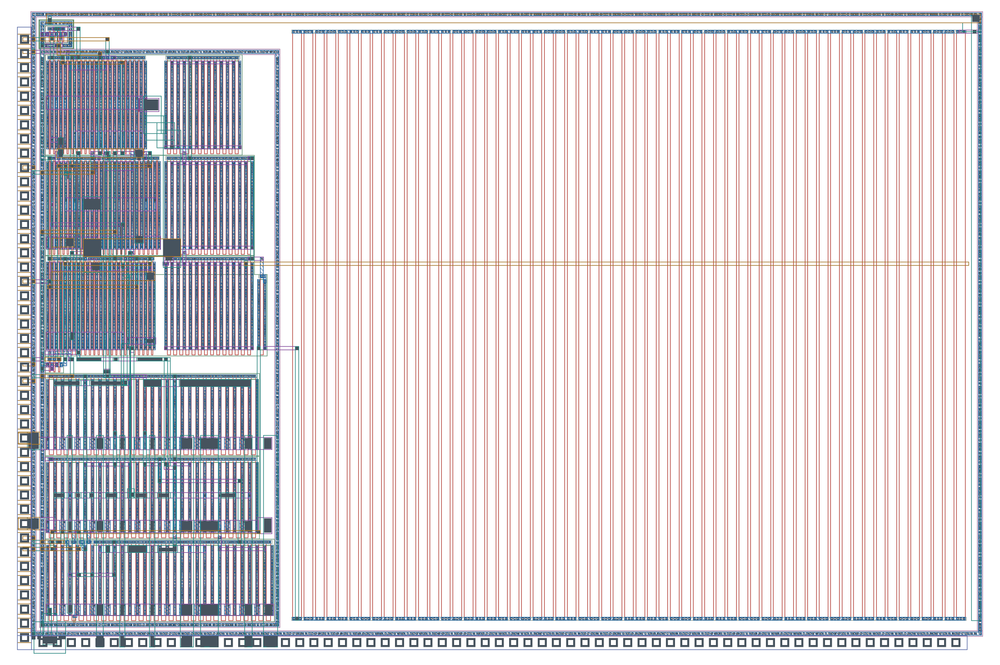
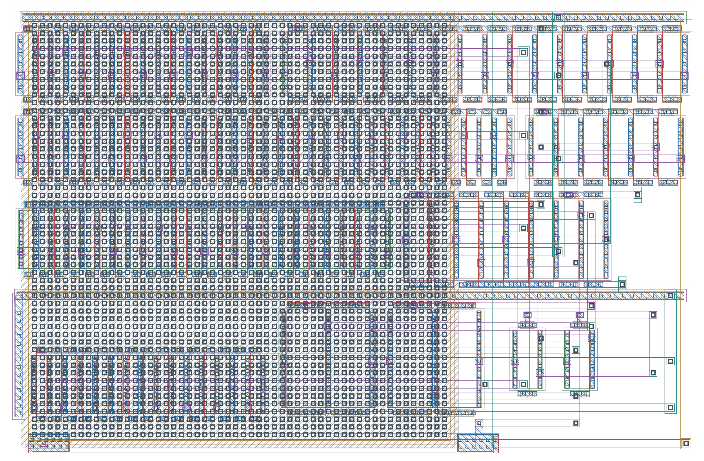
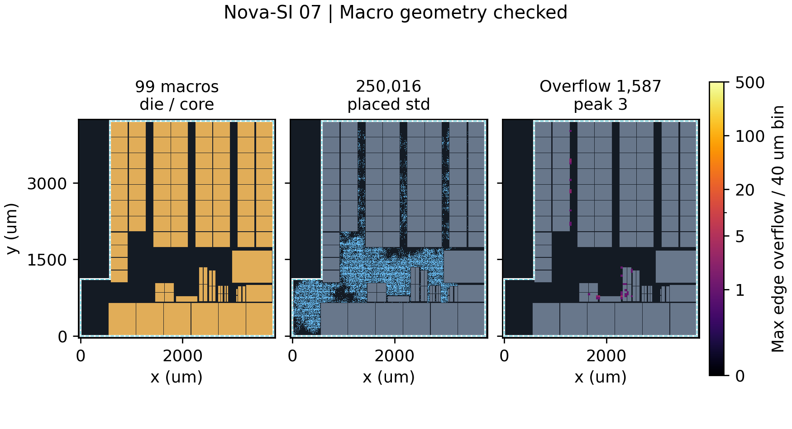

VegaAnalog intelligence
Connecting topology selection, circuit sizing, simulation, and layout in analog design workflows.
Topology→Sizing→Simulation→Layout
EXPERTISE × ITERATION
AI-NATIVE CHIP DESIGN
Bringing AI and chip engineering together. We turn design expertise into agentic workflows for analog and digital integrated circuits.
Built by researchers. Grounded in engineering.

Programmable ICC/IPTAT NMOS current mirror
可编程 ICC/IPTAT NMOS 电流镜
01 / OUR APPROACH
A design kit for the intelligence era.
Chip design takes more than a capable model. Our Circuit Design Kit brings domain expertise, agents, and design tools into engineering workflows — connecting specifications with implementation.
TOWARDS DESIGNLESSMaking chip design capability more accessible through AI and engineering expertise.
Connecting topology selection, circuit sizing, simulation, and layout in analog design workflows.
Agentic back-end workflows spanning design initialization, floorplanning, placement and routing, and verification.
02 / RESEARCH
We study what AI agents can do when designs must answer to physical constraints and engineering verification.

BENCHMARK SUBMISSION / GPT-6.1 SOL · CODEXRESEARCH REPORT · 2026
An Open Benchmark for Agentic Analog Layout Design
Fixed netlists. Open-ended tool use. Independent physical, electrical, and layout-quality evaluation. A benchmark for studying end-to-end analog layout agents, including our Novara system.

DIGITAL / INDUSTRIAL DESIGNRESEARCH REPORT · 2026
A Framework and Empirical Study of AI Agents
Evaluating macro placement on one industrial design through a fixed downstream flow, measuring congestion, timing, wirelength, and utilization. Our locally deployed Nova-SI system is evaluated alongside general-purpose agents.
03 / THE TEAM
Working at the intersection of intelligence and silicon.
NovaSilicon brings together people with complementary experience in AI research and chip design. We combine scientific exploration with hands-on engineering to build tools grounded in real design work.